Working with files on Gravit Designer Cloud
Gravit Designer gives you cloud storage that lets you access your designs from any device.
You open files stored on the cloud by clicking or by pressing++.
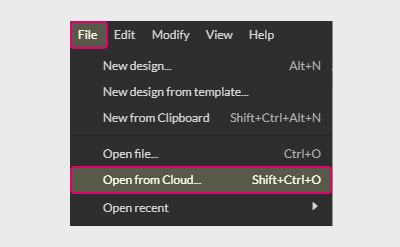
You can also access cloud storage from the Welcome screen.
To save your designs, click or .
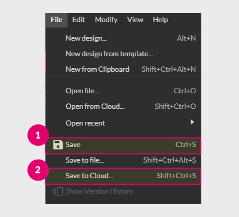
You can also press + to open up a dialog with the Save to Cloud option.

Cloud dialog box
It has two sections :
- Header
- Content
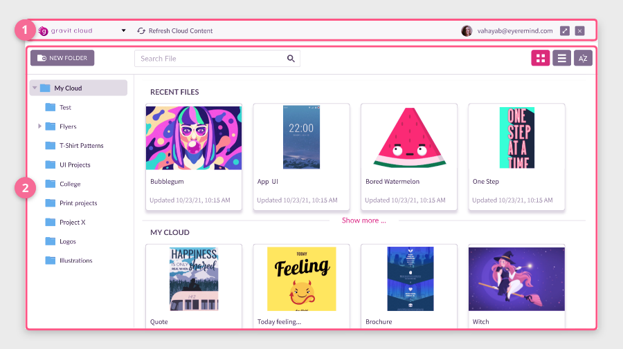
Header section
The header contains the Gravit Designer Cloud’s drop down (1), Refresh Cloud Content button (2), your account information (3), and close, maximize/minimize icons (4).
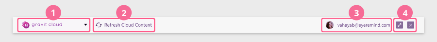
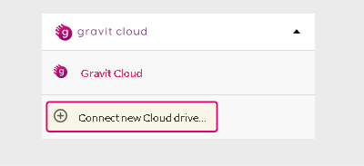
Content section
The content section contains three areas:
- Helper area where you can create a new folder, search for files or folders, change the view or list your files in a specific order.
- Folder area to select the folder.
- File area with the Recent Files session and all files stored on the cloud or in the selected folder.
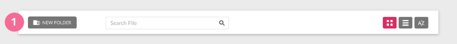
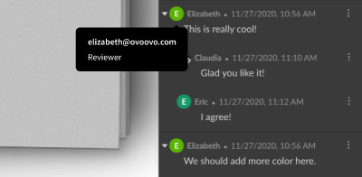
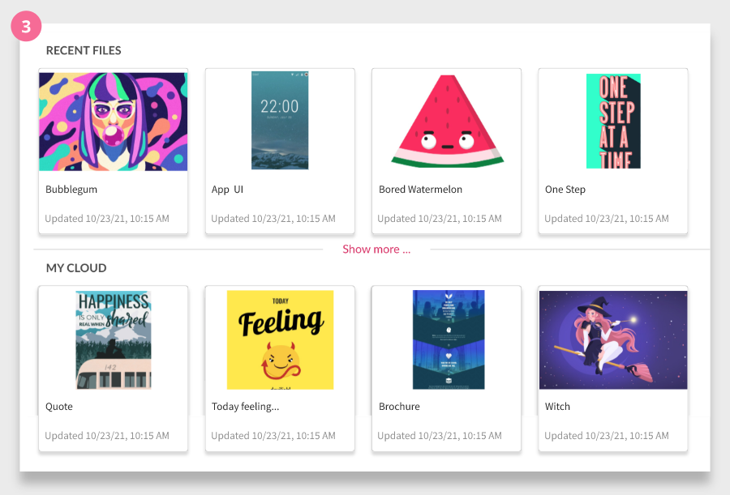
When clicking a file, a contextual window is opened on the right side of the Cloud dialog. It displays a bigger preview and more details about the file, such as its sharing status, the number of collaborators, the number of comments, and the status of the Review process.
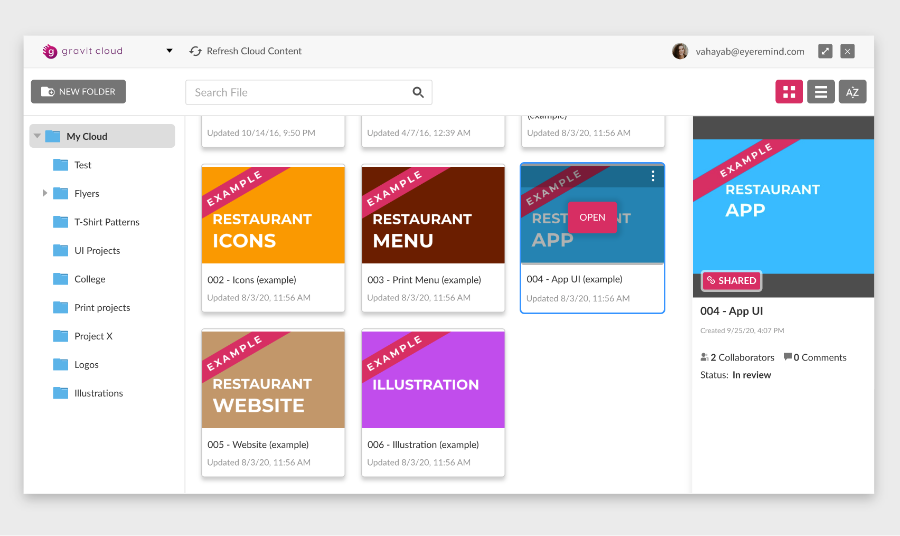
When saving a new file to the Cloud, a saving section (1) is shown at the footer of the Cloud dialog.
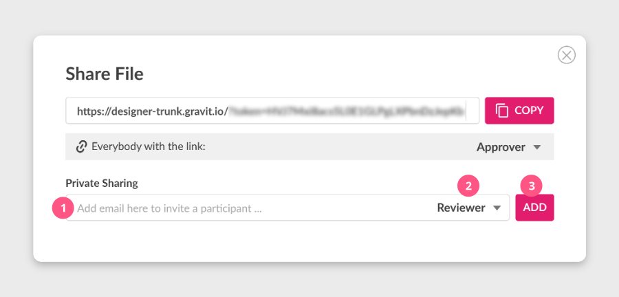
Contextual options for each file are available in a dropdown (2) by clicking on the three-dots icon(1) on the top-right of the thumbnails.
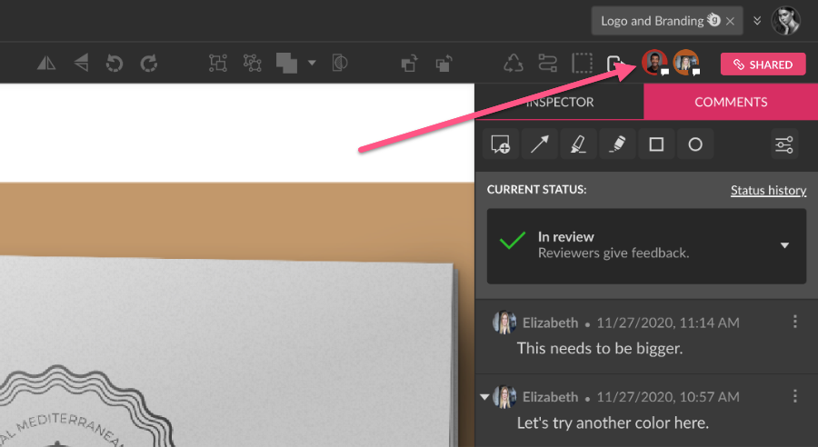
Example files
If you just created your account or still haven’t saved any files to your Cloud, it still won’t be empty. Gravit Designer offers a variety of example files that you can explore and to get familiar with the app.
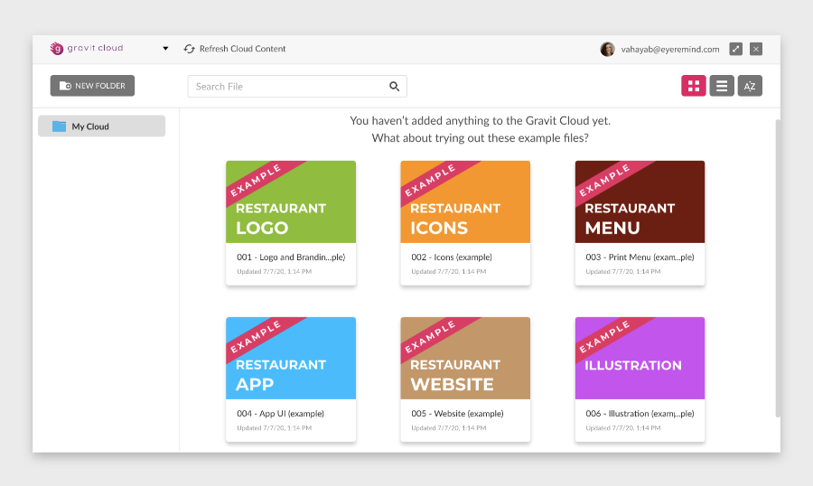
Even after you save your own designs, example files are always available at the bottom of your files list.
Google Drive integration
You can open a file from your Google Drive storage and edit it in Gravit Designer.
First, open the Gravit Designer Cloud drop-down on the top-left of the Gravit Designer Cloud panel.
Select Connect new Cloud drive to open the Add new Cloud drive panel.
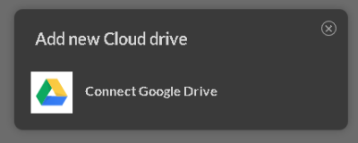
Click Connect Google Drive to open a dialog with the list of your Google accounts.
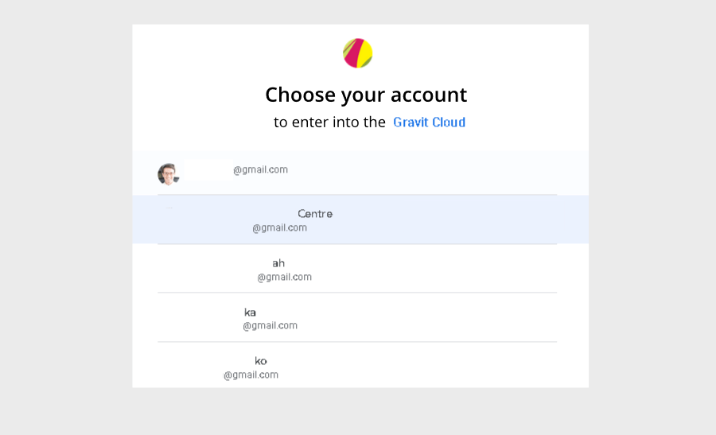
Select an account to proceed to the confirmation dialog, then click Allow if you agree with the privacy policy and terms of use.
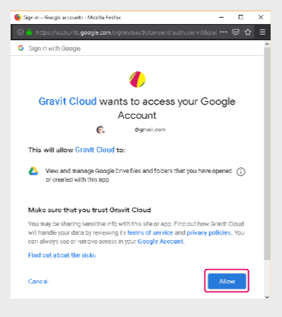
Another dialog opens.
- Click Open Additional Files to select the file from Google Drive storage to open in Gravit Designer.
- Click OK if you only want to connect the Gravit Designer app to the Google Drive account.
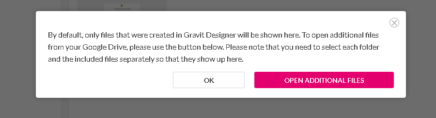
Open a file from Google Drive
Imagine you are looking for the file you once saved in your Google Drive.
You can open it by following these steps:
- Click or press ++.
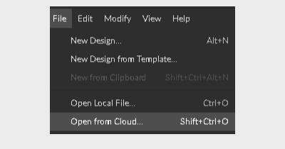 - Ensure Personal Google Drive is selected in the Clouds drop-down on the top-left of the panel.
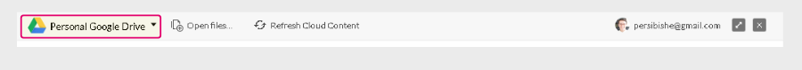 - Click Open files to open the Google Drive folder.
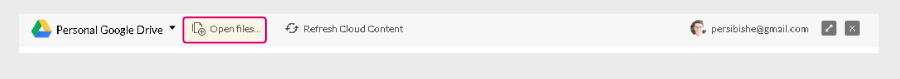 - Double-click the file to start editing in Gravit Designer or choose the file and click Select button on the bottom left.
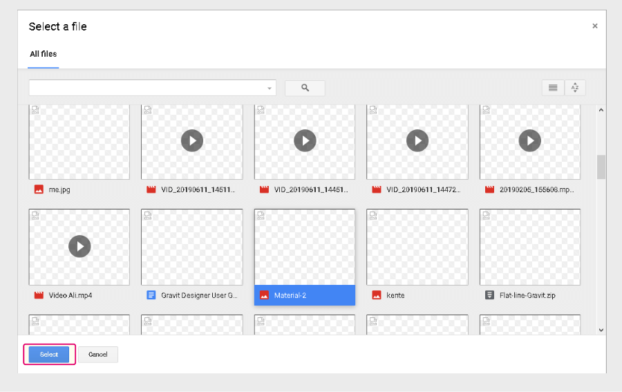
Work with multiple files
You can open multiple files at the same time in Gravit Designer from your local drive or Google Drive.
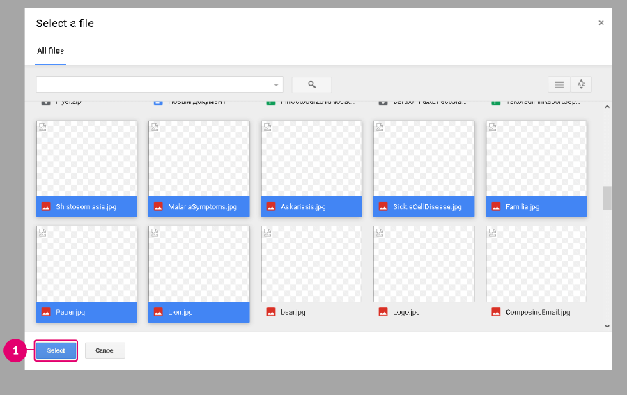
To Select multiple files (1) from Google Drive folder hold down or . You can add them to the Gravit Designer Cloud panel, where they’re displayed as thumbnails in the content section.
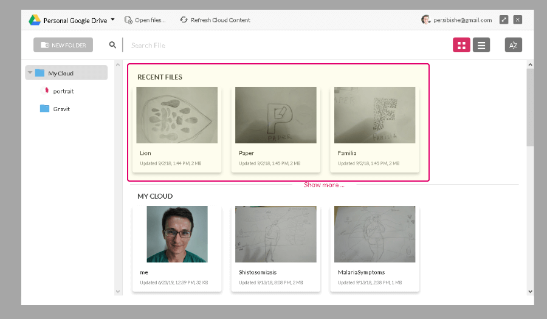
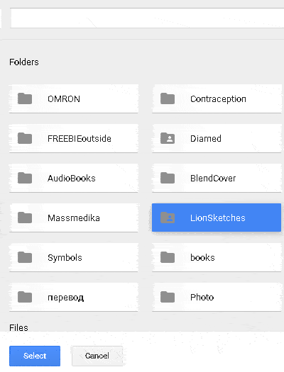
Google Drive options
To edit your Google Drive integration, open the Cloud drop-down and click the Settings icon.

In the dialog, type the name of your integration.
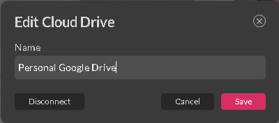
Click the Save button to commit the changes.
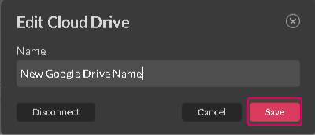
Click the Disconnect button to exit your current Google Drive account and cancel the Google Drive integration.
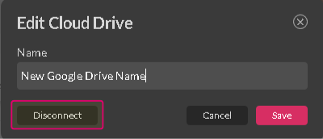
Now you can select another Google Drive account to connect to Gravit Designer.
Sharing files
Starting in version 2.1, you can share designs you saved on the cloud. All you need to do is to copy and paste the link from the Share dialog. There are two options available: the Public and Private sharing links.
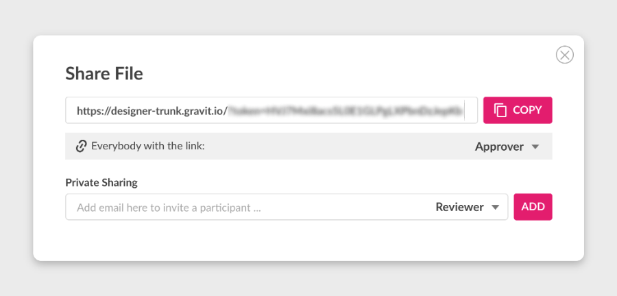
To open the Share dialog, click the Share button on the top-right of the Gravit Designer document.
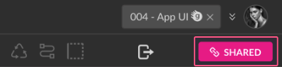
In the drop-down on the right(1), you can set specific roles to users with whom you share the link: Viewer, Developer, Reviewer, or Approver. It’s also possible to remove the access from everyone with the link(2).
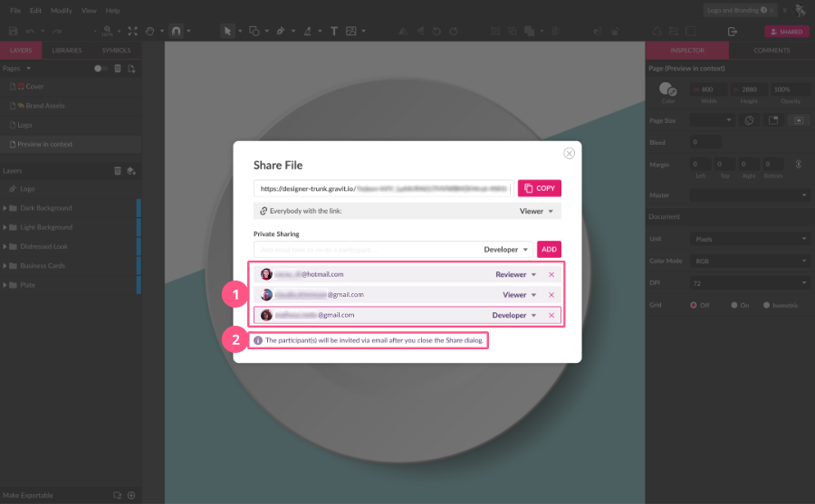
Viewers can only view the file. Developers can inspect elements from the file, save a copy or download, and export the file. Reviewers can add comments and annotations. Approvers can comment, reopen and approve a file. By setting the role to No Access, everyone with the link loses access to that particular file. If you change it to another role, users with the link will be able to access it again.
You can click here to open a file and see what the Viewer role looks like.
The same roles can be applied to Private Sharing(1). This link is sent via email. Using Private Sharing, you can restrict access. For example, you can leave the Public link with the Viewer role and provide this link to people, but leave only a few as Reviewers through the Private Sharing link.
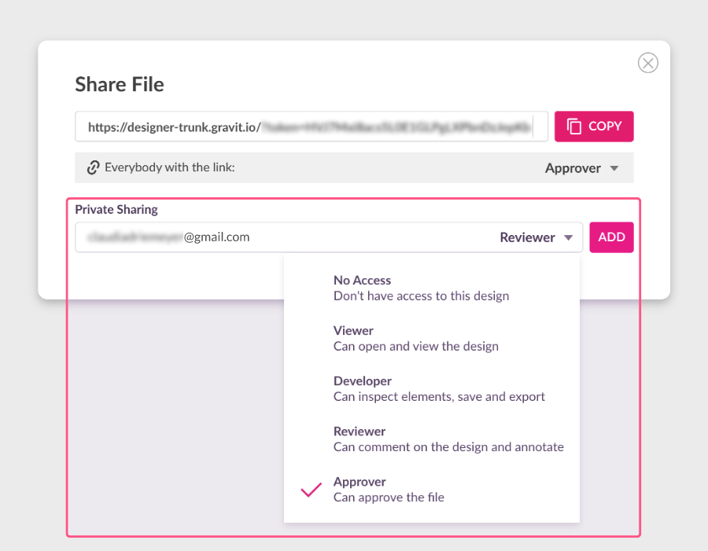
For more information about sharing files and collaborating with other users, see Collaboration page.
Version history
You can access up to the last 20 versions of a design saved to the Gravit Designer Cloud. This allows you to continue working from a reversion point in the design process, restore a critical element or see how your design evolved. It can be accessed by clicking . A new version is created every time you save your file.
A list of all available versions of the current design displays in the right panel. Clicking on a version previews it on the canvas. And with a double-click, you can edit it.
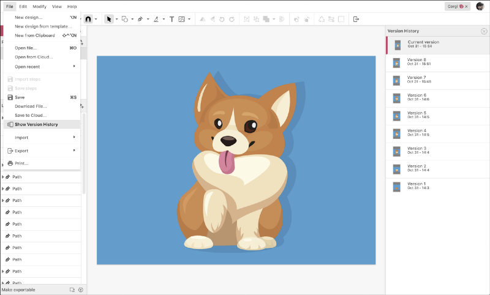
When you preview a version of a design, the menu bar is replaced with two buttons: and . Both commands are also available by right-clicking a version in the list. Even when you have reverted to an older version, all future versions are still accessible in the list.
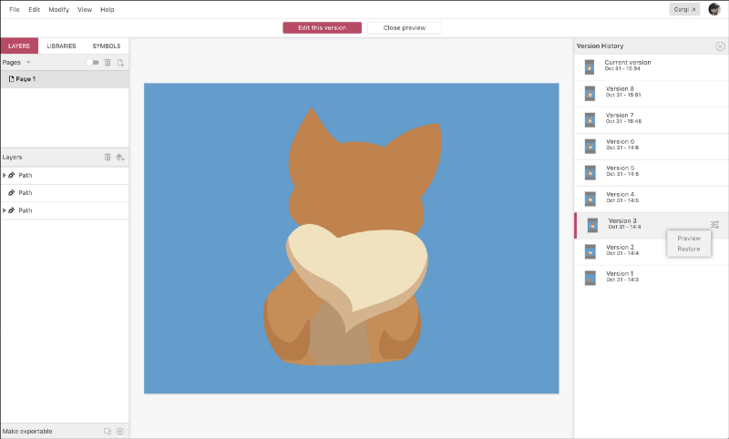